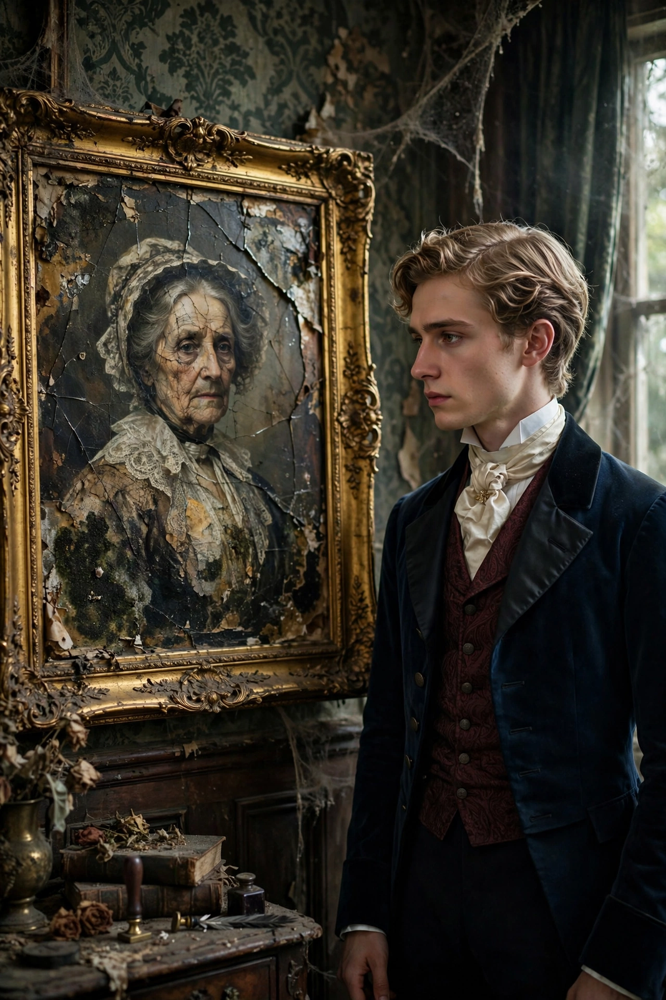

The Picture of Dorian Gray
| The Picture of Dorian Gray | |
 | |
| Author | Oscar Wilde |
|---|---|
| Language | English |
| Genre | Philosophical novel, Gothic fiction, Decadent literature |
| Published | 1890 (magazine), 1891 (book) |
| Publisher | Ward, Lock & Co. |
The Picture of Dorian Gray is a philosophical novel by Irish writer Oscar Wilde. A shorter novella-length version was published in the July 1890 issue of the American periodical Lippincott's Monthly Magazine; Wilde revised and expanded it for book publication in 1891. It is Wilde's only novel.
Plot summary
The beautiful young Dorian Gray sits for a portrait by artist Basil Hallward. Under the influence of the witty, hedonistic Lord Henry Wotton, Dorian wishes that the portrait would age while he stays young. The wish comes true: Dorian pursues every pleasure without ageing, while the portrait records his years and sins, growing hideous. He breaks the heart of actress Sibyl Vane, who kills herself; years later he murders Basil when shown the corrupted picture. Finally, attempting to destroy the portrait, Dorian stabs it — and is found dead, aged and withered, while the portrait is restored to its original beauty.
Themes and reception
The novel explores aestheticism, the doctrine of art for art's sake championed by Gautier and Walter Pater, alongside Faustian bargains, the influence of Huysmans's decadent "yellow book", and the tension between beauty and morality. Contemporary critics condemned the book as immoral; at Wilde's 1895 trials for gross indecency, the novel was used as evidence against him. Its preface, a series of aphorisms, remains one of the most quoted statements of aestheticism.
Adaptations
The novel has been adapted many times for film (notably the 1945 MGM version), stage and television, and Dorian Gray has become a stock figure across popular culture, appearing as a character in works such as The League of Extraordinary Gentlemen.